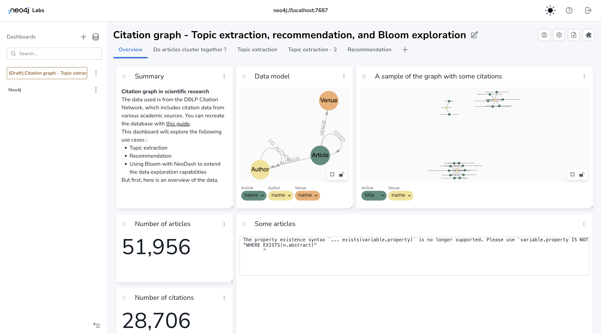
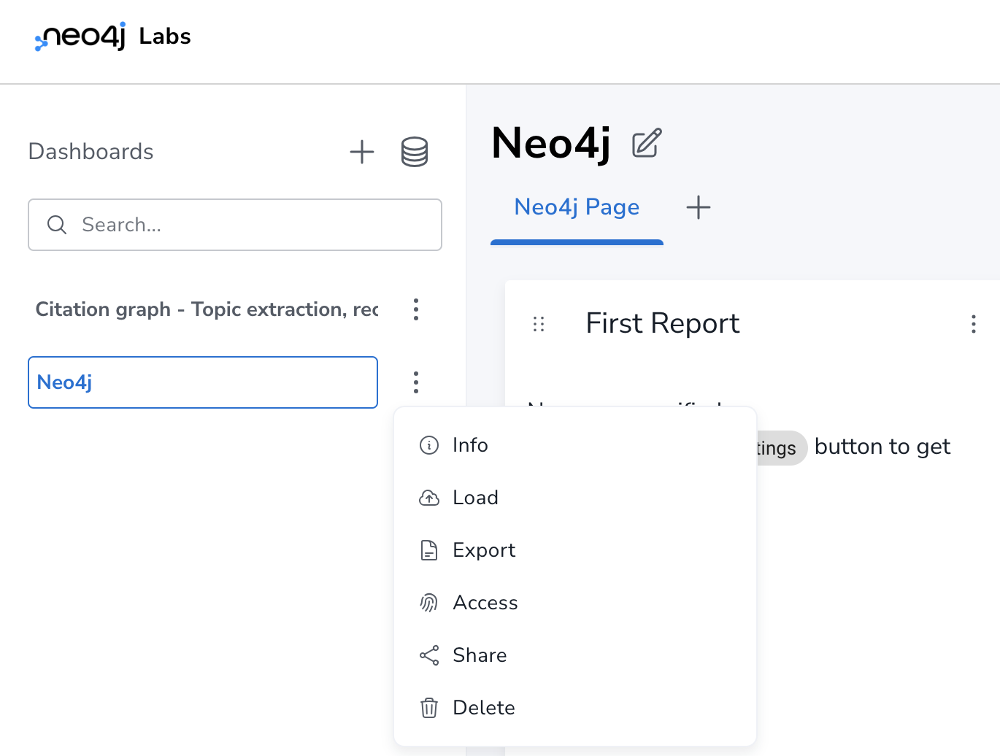
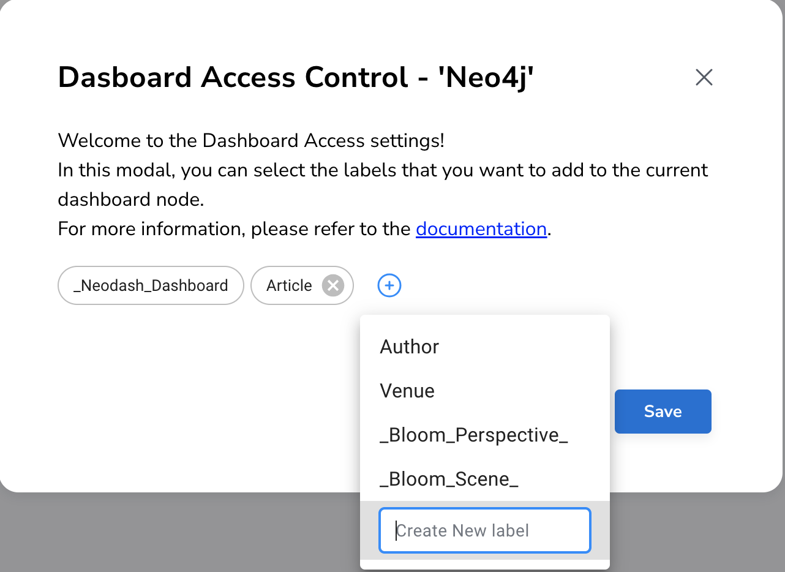
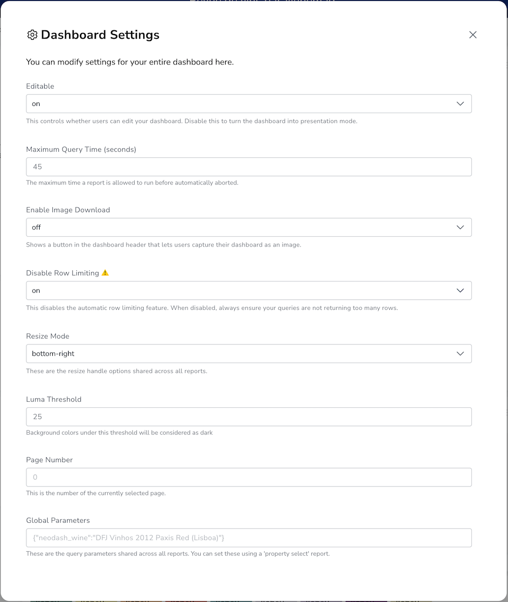

|
This documentation pertains to the (legacy) unsupported version of NeoDash. For users of the supported NeoDash offering, refer to NeoDash commercial. |
Dashboards
|
This documentation pertains to the (legacy) unsupported version of NeoDash. For users of the supported NeoDash offering, refer to NeoDash commercial. |
In NeoDash, a dashboard consists of several pages, each of which can consist of multiple reports.

As an example: The screenshot above shows a dashboard with three pages:
Breweries, Beer Ratings and Styles. The dashboard title My
Beer Database Dashboard 🍺 is displayed on the top of the window.
The first page is selected, and contains three reports, a table, a graph and a map. Each report can be given their own name, and has exactly one Cypher query used to populate the report. See Reports for more info on how reports work.
Dashboard Management
After startup up NeoDash, you will be given the choice to create a new dashboard or open an existing one (if available). After being connected, the buttons on the sidebar can be used to save, load or share a dashboard.

Save a Dashboard
A NeoDash dashboard is, simply put, a JSON file. As an example, the default dashboard has the following structure:
{
"title": "",
"version": "2.0",
"settings": {
"pagenumber": 0,
"editable": true,
"fullscreenEnabled": true,
"parameters": {}
},
"pages": [
{
"title": "Main Page",
"reports": [
{
"title": "Hi there 👋",
"query": "**This is your first dashboard!** \n \nYou can click (⋮) to edit this report, or add a new report to get started. You can run any Cypher query directly from each report and render data in a variety of formats. \n \nTip: try _renaming_ this report by editing the title text. You can also edit the dashboard header at the top of the screen.\n\n\n",
"width": 3,
"type": "text",
"height": 3,
"selection": {},
"settings": {}
},
{
"title": "",
"query": "MATCH (n)-[e]->(m) RETURN n,e,m LIMIT 20\n\n\n",
"width": 3,
"type": "graph",
"height": 3,
"selection": {
"Movie": "title",
"Genre": "name"
},
"settings": {
"nodePositions": {}
}
}
]
}
]
}
After opening the save dialog, there are three options for saving your dashboard:
-
Save as a file. This triggers a download of the current dashboard as
.jsonfile. -
Save inside Neo4j. This stores a stringified representation of the dashboard as a node in the database. When using Neo4j multi-database, you will be given the choice of which database to save the dashboard in.
-
Copy-paste the JSON file directly.
Keep in mind that your currently active dashboard is stored in the browser cache. If you clear your cache (cookies), the dashboard is gone.
Load a Dashboard
Just like in the save screen, a dashboard can be loaded in one of three ways:
-
Load from a file. This requires you to select a
.jsonsomewhere on your computer. -
Load from Neo4j. This requires you to select a dashboard node stored in the database. When loading from Neo4j, you will be presented with the list of dashboards in reverse chronological order.
-
Loading a JSON file by pasting it directly into the editor.
Share a Dashboard
A dashboard can be shared with other users by generating a direct link to it. This link will contain:
-
A link to the dashboard (either a direct URL or the name of the dashboard inside Neo4j).
-
(Optionally), the credentials of the database that the dashboard is reporting on. Be warned, when using this feature, the share link will contain the database credentials, which can be a security risk.
-
If the dashboard should be viewed in `editor mode', or `standalone mode'. The latter configures neodash to run in a stripped down UI without any of the editor features enabled.
When creating a NeoDash deployment on a production database, it is not recommended to use the `Share' feature. Rather, set up a dedicated standalone deployment of NeoDash. See Publishing for more infomation.
Dashboard Access Control
With this feature, you can manage dashboard access by leveraging the native Neo4j Role-based Access Control (RBAC) functionality. Attach additional labels to the currently selected dashboard node within this window, either by utilizing existing labels in your database or creating new ones, to regulate access permissions.
You can find the Dashboard Access Control feature by clicking on the three dots next to the dashboard name in the sidebar and selecting the "Access Control" option.
This approach should be used together with restricted privileges on labels, assigned to certain roles. See Access Control Management for details.

Dashboard Settings
Settings for the entire dashboard can be accessed by clicking the Settings ⚙️ button in the dashboard sidebar.

This window can be used to control the followng settings:
| Name | Changeable | Default Value | Description |
|---|---|---|---|
Editable |
Yes |
on |
If enabled, show the dashboard in `editing mode'. If not, show it in `view mode'. In view mode, all editing is disabled, pages and reports can not be moved, edited or renamed. |
Enable Fullscreen Report Views |
Yes |
on |
If enabled, show the 🔳 Fullscreen button on the top-right of a report, letting users maximize a visualization. |
Maximum Query Time (seconds) |
Yes |
20 |
The maximum time is a query is allowed to take before being cancelled automatically. Increase this if you have complex analytical queries. |
Disable Row Limiting |
Yes |
off |
If enabled, the automatic row limiting feature of dashboards is disabled. |
Page Number |
No |
0 |
The current page number of the dashboard being viewed. This can only be changed by switching pages in the dashboard header. |
Global Parameters |
No |
{} |
The global parameters that are shared among all reports in the dashboard. See the next section for more on global parameters. |
Parameters
Dashboard parameters are key-value pairs that can be used inside the
queries of reports. A convention is that a dashboard parameter in
NeoDash will always start with $neodash_.
Parameters can only be set (and unset) using the Parameter Select reports. After setting a parameter, it will be available to all reports in the dashboard. A query that uses a dashboard parameter will look like this:
MATCH (m:Movie)<-[a:ACTED_IN]-(p:Person) WHERE m.title = $neodash_movie_title RETURN m, a, p
Deep-Linking Parameters
For browser-based NeoDash deployments, you set NeoDash parameters by means of URL parameters. For example, when a user visits the following URL:
https://neodash.graphapp.io/?neodash_person_name=Adam
This will set the parameter $neodash_person_name to Adam after
loading the dashboard.